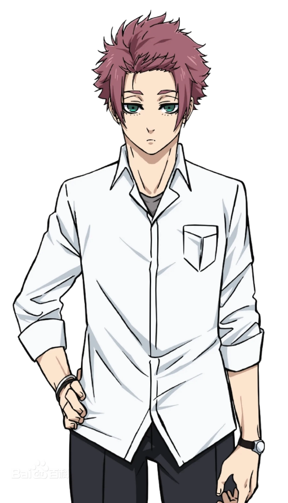

8 Bit改编的电视动画作品
电视动画片《蓝色监狱》改编自金城宗幸原作、野村优介作画的同名漫画作品。2021年7月31日，宣布电视动画化的消息 [1]。该片由8Bit负责制作，于2022年10月9日起播出 [2]，全24集。
该作被评为Anime Corner 2022年度体育动画 [24]、Anime Corner 2023年度体育动画 [34]、第十届Anime Trending最佳体育动画 [35]，且获得日本角色大奖2023新人奖 [33]。
蓝色监狱
人物关系图
洁世一 蜂乐回 千切豹马 国神炼介 马狼照英 凪诚士郎 御影玲王 糸师凛 剑城斩铁 时光青志 糸师冴
不当世界第一的利己主义者，就当不上世界第一的前锋。
为了培养出能带领日本队夺得世界杯的前锋，日本足球协会制定了一个计划。
其名为“蓝色监狱”计划。
300名高中生被召集于此，并且全员都是前锋。以其中299人的足球生涯为代价诞生的，为日本足球掀起革命的前锋究竟会是谁？
| 洁世一 配音：浦和希 无名高中生FW（前锋）。梦想有一天能成为日本代表队的王牌前锋，在世界杯上获得优胜。在县大会决赛中， |
|
| 蜂乐回 配音：海渡翼 拥有独特感性，我行我素的性格。喜欢以品味出众的运球为武器，自由奔放的足球风格。 |
|
| 国神炼介 配音：小野友树 充满体育精神和汉气的好青年，信念是“光明正大”。他正直诚实的性格也赢得了队友的信任。 |
|
| 千切豹马 配音：齐藤壮马 相貌中性的美少年。因为“某个理由”，自己的武器对队友也保密。 |
|
 |
马狼照英 配音：诹访部顺一 率领X组的绝对王者。自称为王，在比赛中不分敌我，把周围的运动员当作配角对待。虽然他是一个固执地认为 |
| 凪诚士郎 配音：岛崎信长 虽然只有半年的学习足球经历，但却拥有惊人的足球天赋，是一位天才前锋。对以足球为首的所有运动都没有 |
|
| 御影玲王 配音：内田雄马 拥有能够应对所有打法的灵巧度的V组攻守要点。作为大企业·御影公司的公子，对无忧无虑的人生感到无聊， |
|
| 糸师凛 配音：内山昂辉 蓝色监狱的顶尖选手，有很高的得分力、冷酷的气概，是个言行引人注目的超利己主义者。另一方面，他的洞 |
|
| 剑城斩铁 配音：兴津和幸 爆发性的加速力和左脚射门是他的武器，他的标志是眼镜。虽然流露出知性的气息，但实际上并不擅长复杂的 |
|
| 时光青志 配音：立花慎之介 容易说出消极的发言。另一方面，拥有惊人的体能和无穷无尽的耐力，实力一流。 |
|
|  | 糸师冴 配音：樱井孝宏 现效力于西班牙著名皇家俱乐部，并被选为新一代世界11杰(世界最佳阵容)，是备受世界瞩目的球员。把现在的 |
出品：《蓝色监狱》制作委员会（万代南梦宫影像制作、讲谈社、万代南梦宫Music Live、朝日电视台、Crunchyroll、万
代魂、8bit、TOY'S FACTORY） [17]
| 集数 | 日文标题 | 中文标题 | 分镜 | 演出 | 总作画导演 | 作画导演 |
|---|---|---|---|---|---|---|
| 1 | 夢 | 梦 | 渡边彻明 | 渡边彻明 川濑正雄 横山和基 |
田边谦司 进藤优 户谷贤都 |
森智子 桥本明日美 小仓典子 松本刚彦 |
| 2 | かいぶつ | 怪物 | 石川俊介 | 石川俊介 | 田边谦司 户谷贤都 进藤优 |
坂本广美 桥本明日美 森智子 中岛裕里 松本刚彦 |
| 3 | サッカーの0 | 足球的0 | 渡边彻明 石山贵明 |
横山和基 | 小谷杏子 田边谦司 |
桥本明日美 中岛裕里 シノミン 隣ANIMATION RadPlus STUDIO MASS KET |
| 4 | 予感と直感 | 预感与直觉 | 石川俊介 | 榎田敬宏 | 田边谦司 | 田边谦司 桥本明日美 森智子 隣ANIMATION 长沼智也 香田智树 |
| 5 | 生まれ変わるのは | 重生就在此刻 | 渡边彻明 石山贵明 |
熊野千寻 | 田边谦司 户谷贤都 |
坂本广美 桥本明日美 森智子 中岛裕里 松本刚彦 小谷杏子 中山美雪 南伸一郎 Big Owl RadPlus |
| 6 | ごめん | 对不起 | 清水聪 | 石黑达也 | 田边谦司 户谷贤都 森智子 |
北条真纯 篠原健二 吉田肇 服部宪知 饭饲一幸 日根野优子 |
| 7 | 滾り | 激情 | 渡边彻明 石川俊介 石山贵明 |
美甘义人 鸟羽聪 |
田边谦司 户谷贤都 森智子 |
坂本广美 桥本明日美 石黑美知子 大槻千绘 佐藤好惠 日根野优子 Tonari Animation Limeros Double Swords Animation |
| 8 | 成功(ゴール)の方程式 | 成功（进球）方程式 | 古川知宏 | 杉本研太郎 | 小美野雅彦 | 小美野雅彦 米泽优 Double Swords Animation モリタユーシ |
| 9 | 覚醒 | 觉醒 | 奥山洁 新田千寻 生原雄次 |
田中孝行 | 田边谦司 户谷贤都 森智子 |
桥本明日美 中岛裕里 シノミン Henry Kuan Porkchop! Double Swords Animation |
| 10 | このままで | 袖手旁观 | 横山和基 | 横山和基 | 田边谦司 户谷贤都 森智子 |
桥本明日美 中岛裕里 シノミン 石黑美知子 菊地康仁 Big Owl 王建 郭成甲 徐晓民 シード Jed Panulin RVEN 陈亮 |
| 11 | 最後の欠片(ピース) | 最后的拼图 | 森川滋 | 鹿岛典夫 | 桥本明日美 坂本ひろみ 中岛裕里 シノミン 石黑美知子 菅原裕幸 田中亚优 大槻千绘 武永一辉 平田彰子 菊地康仁 |
田边谦司 森智子 户谷贤都 |
| 12 | 二次選考(セレクション) | 第二次选拔 | 小岛正士 | 小野田雄亮 | シノミン 桥本明日美 中岛裕里 石黑美知子 Studio Lings Double Swords Animation ECHELLE Animation |
田边谦司 森智子 户谷贤都 |